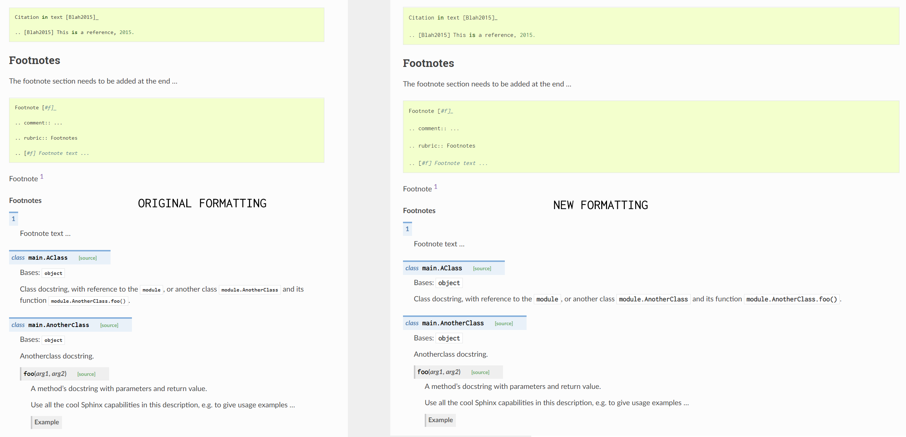

Welcome to Agent666’s RTD Sphinx Theme Template¶
Changes from the standard Sphinx¶
Added Sphinx RTD Theme
Added a number of useful built in Sphinx extensions
intersphinx
autodoc
mathjax
viewcode
todo
githubpages
napoleon
Added reference to use Pygments code syntax highlighter (note if you want to modify this theme copy the
pygments.cssfile into../docs/source/html/_static/cssdirectory and change any of the values and it will overwrite the default Pygment highlighting theme options)Added reference to an additional theme (Cloud Sphinx Theme) that provides for better table formatting options (delete the reference to the extension in the Sphinx config file (conf.py) if you do not want to install/use this)
Sets a number of default html theme options, such as showing the version in the title, adding next/previous buttons top and bottom, etc
Changed default code block and
inline codefonts to Inconsolata and bumped up font size from 12px to 14px for a clearer/crisper layout via a customlayout.htmlfile andcustom.cssfileChanged default description fonts to Inconsolata and bumped up font size from 14px to 16px for a clearer layout, via custom
layout.htmlfile andcustom.cssfile. Where the font size for the descriptions now more closely match the other default font sizes used for the typical body text (its much smaller by default)Changed default max page width from 800px to 1200px max to better suit displaying both more text and longer code lines via custom
custom.cssfile (suits 150 characters per line which is my default goto style). This based on the following code style:-
Black Code style modified to use max 150 characters per line and prefered single quotes using the following settings:-
"python.formatting.provider": "black",
"python.formatting.blackArgs": [
"--line-length=150",
"--skip-string-normalization",
],
Resulting visual changes¶
To Use¶
Copy the
docsfolder to your repositoryModify
conf.pylinesys.path.insert(0, os.path.abspath('../../')1)to the path(s) where modules are stored that you want to be processed on the basis of docstrings within the modules themselvesRun
make htmlat the command prompt from within the../docsdirectory to build html filesView the built html files within the
_builddirectoryNote if you subsequently modify the
custom.cssfile then you may need to runmake cleanfollowed bymake htmlto pickup the css changesReview demo files under
_demodirectory for examples of formatting, etc. This directory can be removed, and references to it removed fromindex.rstfile. Note the example content is taken from the official RTD pages, and due to the wider default page width, and the use of the Sphinx RTD Theme some of the formatting may look different (for example footnotes, and some of the examples of test wrapping around images). You may also get some errors during the html generation due to unreferenced footnotes/citations and the like from the demo files
Prerequisites¶
Sphinx - run
pip install -U Sphinxat the command prompt (http://www.sphinx-doc.org)Sphinx RTD Theme - run
pip install sphinx_rtd_themeat the command prompt (https://sphinx-rtd-theme.readthedocs.io/en/stable/)Pygments Code Syntax Highlighter - run
pip install Pygmentsat the command prompt (http://pygments.org/)Cloud Sphinx Theme - run
pip install cloud_spthemeat the command prompt (adds more functionality with respect to tables, see https://cloud-sptheme.readthedocs.io/en/latest/lib/cloud_sptheme.ext.table_styling.html)
Support¶
If you require support or have any feature requests related to the Sphinx RTD Theme Template package please feel free to raise an issue on Github.
License¶
This project is licensed under the MIT license.
Contents: